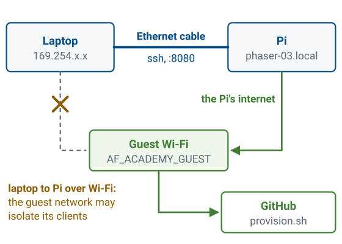
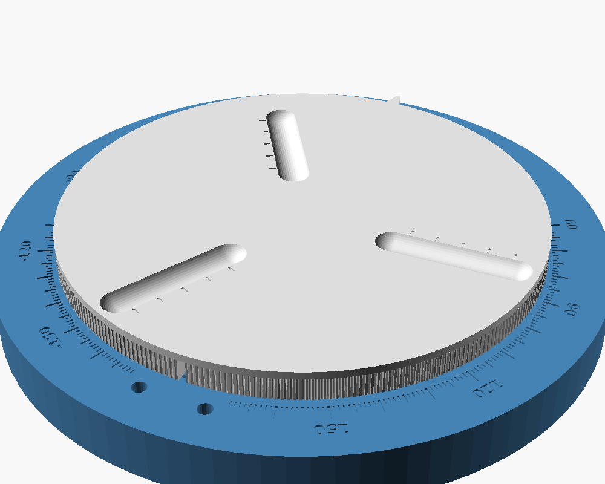

L17 Lab — Phased Array Bring-Up#
Phased Array Bring-Up
Bring your own kit up from a blank card, then prove it works.
L17 Lab · Antennas, Phased Arrays, and Radar Systems · Dr. Neil Rogers
Learning Objectives
- I can identify the hardware architecture of the ADALM-PHASER and control it via SDR software.
This lab is the bench half of Lesson 17. The lesson walked the receive chain block by block; here you bring up that hardware yourself, from a blank card to a beam sweep that follows the source. The lab packet records both: that the kit came up, and that it works.
Part A: Build Your PHASER
Each cadet builds their own kit from a stock Linux image: flash, connect, set the clock, join the Wi-Fi, provision, calibrate.
The Ethernet cable carries ssh and the browser; the Wi-Fi only connects the Pi to the internet.

Each cadet starts with their own PHASER kit and a microSD card and builds the kit up from the operating system: you flash ADI’s stock Kuiper Linux image onto the card, connect to the Pi over a cable, set its clock, put it on the Wi-Fi, run the Phaser provisioning script, and calibrate the array. These are the steps that bring up any embedded Linux device, and each one fails in a way that teaches you something about the device. Part B then makes the first measurements on the kit you built.
The laptop and the kit use two connections for two different jobs. A direct Ethernet cable from the laptop to the Pi carries ssh and the browser interface. The classroom Wi-Fi is only the Pi’s route to the internet, which it needs to download the Phaser software.
The cable is there because of how guest networks are run. A guest network can isolate its clients from one another, so a laptop and a Pi that have both joined the classroom Wi-Fi may be unable to reach each other even though each one reaches the internet. A cable between the two does not depend on the network’s settings, so every step that talks to the Pi from the laptop uses the cable.
Each cadet has their own kit:
the ADALM-PHASER board, with the Raspberry Pi and the ADALM-Pluto attached on the back
an HB100 microwave source on its own small stand or battery holder
one USB-C supply, for the PHASER board, which powers the Pi too
a camera tripod, for the board and for aiming the source
a 3D-printed rotating stand under the tripod: print the STL files in
common/andtripod/from hardware/stand-simple/stla 32 GB microSD card and an Ethernet cable
a laptop with Raspberry Pi Imager and an ssh client
I assign your kit a unique two-digit number, NN, and your kit
is named phaser-NN. Wherever a step shows phaser-NN, type your own number
in place of NN: kit 7 is phaser-07.
On Windows the ssh client is the OpenSSH Client, under Settings > Apps > Optional features; macOS and Linux include one.
The stand’s README has the print settings: PETG if you can, no supports, and the platter printed upside down. It turns the tripod on the array’s own center, so the source can stay put while the board rotates, and its engraved scale reads the angle.
I also keep fallback cards, copies of one finished kit. A fallback card gets a kit running when a build cannot be finished in the period; it is named for your kit before it goes in, and it still needs Steps 21 to 24, because the calibration it carries belongs to my kit.
The Rotating Stand
Print
common/andtripod/from the stand’s files: PETG, no supports.The tripod’s feet sit in three grooves, with the array’s center on the axis.
The base carries a ±180° scale; the platter clicks every 5°.

Every kit stands on this turntable. The kit’s own tabletop tripod sits in the platter’s three grooves, and the platter turns on the base about the middle of the array, so in the L21 Lab you can rotate the board in front of a fixed source and read the angle off the base’s engraved scale.
Kit Care
Do
Power only through the PHASER’s USB-C.
Shut down before you unplug.
Hold the board by its edges.
Tighten SMA connectors by hand.
Don’t
Pull power or the card while Linux runs.
Touch the patches.
Remove a kit without permission.
The kit is yours for the semester, and every lab after this one runs on it. These rules keep it working.
Use the 5 V, 3 A supply in the kit, plugged into the PHASER’s USB-C input, labeled P16. The PHASER board powers the Pi and the Pluto through its own connectors, and a supply plugged into the Pi bypasses the board’s supply.
Linux writes to the card while it runs, so pulling the power or the card mid-write can corrupt it, and a corrupted card means flashing it again. Shut down with the button on the back of the PHASER, or by holding the Connected pill for two seconds, and wait until the lights go out before you unplug (Step 25).
The amplifiers behind the patches and the ADAR1000 beamformers are static-sensitive parts. Touch a grounded metal surface before you handle the board, and hold it by its edges. Keep fingers and objects off the patch face: anything on a patch changes its match, and pressure can damage it.
An SMA connector needs only finger tightness. A wrench, or a connector started at an angle, can strip the threads or break the connector off the board. Support every cable so its weight does not hang on the board’s connectors.
If the kit stops responding, run sudo reboot first, then re-run the
provisioning script (Step 16), which repairs the installation without
erasing the card. Flash a new card only when I tell you to.
Kits stay in the classroom. Ask me before you take one anywhere else.
Before Class: Download
Install Raspberry Pi Imager 2.0.
Download Kuiper 2021_R2, ADI’s Linux image for the Pi, and unzip it.
Use exactly this release. Later Kuiper releases break the provisioning script.
Do Steps 1 to 5 at home before the period: they need only your laptop and the
card. The download is image_2023-04-02-ADI-Kuiper-full.zip; right-click it
and choose Extract All, which leaves a Kuiper folder holding the .img
file that Imager writes.
Kuiper 2021_R2 is the release the Phaser software is tested on, and it is based on Debian 11, bullseye. The later Kuiper releases move to a newer Debian that changes the parts of the system the provisioning script and the Wi-Fi steps rely on: where the boot files live and which program manages the network.
Before Class: Flash the Card
In Imager, choose Raspberry Pi 4.
OS: scroll to the bottom, Custom OS, the Kuiper
.img.Choose the microSD card, agree to erase, and wait.
Imager erases the storage you pick: check it is the card.
The write and its verification take under 15 minutes. Leave the card in until Imager says the write is complete, and cancel any offer from Windows to format the card afterward.
Imager offers no OS customization for a custom image, only for Raspberry Pi OS, so nothing on the card changes the user and password that every later step relies on; the provisioning script in Step 16 names the kit instead.
After the write, the card holds two partitions: a small FAT one that holds the boot files, which Windows can read, and a Linux one, which it cannot. That is why Windows offers to format part of the card, and formatting it would erase the image.
Assemble and Power On
Mount the PHASER on the tripod.
Card in the Pi.
Pluto USB to the Pi.
Ethernet to the laptop.
USB-C into the PHASER, by the SMA.
Power only through the PHASER’s USB-C, never the Pi’s.
Mount the board with its patch face vertical and its row of patches horizontal: the array steers in the plane of that row, so a board mounted on its side steers in elevation, while every later lab sweeps the beam in azimuth. Looking at the front of the array, the patch face, E1 is the element at the right end of the row and E8 the one at the left end. Step 6 of Part B asks which of the two the source moved toward.
The PHASER board supplies the Pi through its own connector, and powering the Pi directly bypasses the board’s supply. Unplugging the kit while Linux is running can also corrupt the card; see the last frame of Part A for the safe way to power down.
First Contact
Open PowerShell, wait a couple of minutes, then:
ssh analog@analog.local
Type yes to the fingerprint question; the password is analog.
“Host identification has changed”? Run ssh-keygen -R analog.local, then try again.
analog is the name, the user, and the password that ADI’s Kuiper image ships
with. The fingerprint question asks whether to trust the kit’s host key, which
this laptop has never seen. If ssh says it cannot resolve analog.local, wait
another minute and try again.
Every freshly flashed card answers to analog.local with new host keys, so a
laptop that has met an earlier card under that name refuses the new one until
ssh-keygen -R removes the old key.
Nothing on a bare cable hands out addresses. After about a minute of asking,
the Pi and the laptop each give themselves a link-local address, one in
169.254.x.x that only the cable can carry, and the laptop finds the Pi by
name with multicast DNS, the .local lookup. That is why a direct cable works
with no setup on either end, and why the first minute after power-on shows
nothing. On my kit, hostname -I showed exactly one address at
this point, 169.254.210.227.
Join the Wi-Fi
Set the Wi-Fi country and add the classroom network:
sudo raspi-config nonint do_wifi_country US
sudo tee -a /etc/wpa_supplicant/wpa_supplicant.conf > /dev/null <<'EOF'
network={
ssid="AF_ACADEMY_GUEST"
key_mgmt=NONE
}
EOF
Run
sudo reboot, wait a minute, and ssh in again as in Step 11.Run
ping -c 4 github.comand expect four replies.
The classroom Wi-Fi is the open guest network AF_ACADEMY_GUEST. The reboot in
Step 13 is not optional: on my kit, asking the Wi-Fi client to reread
its settings without a reboot left it offline, and the ping failed until the
Pi restarted. If the ping fails after the reboot, tell me.
Kuiper 2021_R2 is based on Raspberry Pi OS bullseye, where wpa_supplicant
joins the Wi-Fi network and dhcpcd then requests an address on it. The Wi-Fi
country is a regulatory setting: the channels a radio may use depend on where
it is, so the operating system keeps the Wi-Fi radio blocked (rfkill) until a
country is set. The network block names the network, and key_mgmt=NONE tells
wpa_supplicant it has no password. tee -a appends the block with root
privileges, which a plain >> redirection would not have.
Two things must hold on an open guest network for this step and for provisioning, and I check both before class. The network must not put a captive portal, a sign-in or terms page, in front of a new client, because the Pi has no browser to click through one. It must also allow outbound HTTPS, because the provisioning script downloads the Phaser software from GitHub.
Set the Clock
Seed the clock from a web server, then check it:
sudo date -s "$(curl -sI http://deb.debian.org/ | sed -n 's/^[Dd]ate: *//p')"
date
The clock comes from a web server, so it waits until the Pi is on the Wi-Fi.
sudo asks for the password, analog. The date that comes back should be
today’s date and time; the server reports it in GMT, and the Pi shows it in its
own time zone.
A Raspberry Pi has no battery-backed clock, and Kuiper ships with no network time client, so a fresh card boots believing it is the day the image was made, in April 2023. Every secure download that follows checks the server’s certificate against today’s date, and a certificate is only valid between two dates, so a wrong clock makes the download fail with a certificate error before any software arrives. The provisioning script installs a time client and fixes the clock for good, but it has to be downloaded first.
The command breaks that circle with a plain, unencrypted request, which no
certificate guards: curl -sI fetches only the headers of a Debian web page,
sed keeps the line that begins Date:, and date -s sets the clock to it.
Provision the Kit
Run the provisioning script, with your kit’s name:
curl -fsSL https://raw.githubusercontent.com/livethisdream/phaser/main/scripts/provision.sh | bash -s -- --hostname phaser-NN
Wait for
Provisioned., then runsudo reboot.Run
ssh analog@phaser-NN.local, answeryes, and check thathostnameprintsphaser-NN.
The script prints its steps, [1/8] through [8/8], and takes tens of
minutes; step [7/8], which builds the Python library that talks to the
board, is the long one and can sit quiet for minutes. Leave it running.
Near the end it prints two WARN lines saying the unit has not been
characterized, and a box listing Find HB100, Characterize IF, and Calibrate.
Both are expected on a new kit: Steps 22 to 24 do exactly that. On a first
provisioning the board has not appeared yet, so the installer may say the
interface is not answering yet; the reboot in Step 17 fixes it.
The -s -- in Step 16 matters. Without the -s, bash takes --hostname for
the name of a script file and stops with bash: --hostname: No such file or directory.
provision.sh turns a stock Kuiper card into a PHASER kit. In order, it
checks the machine, installs a time client and fixes the clock for good,
installs the system packages, adds the PHASER board’s device-tree overlay to
the boot configuration, sets the hostname, installs the plumbing that lets the
Pi talk to the Pluto over USB, builds pyadi-iio, ADI’s Python library for the
board, and finally runs install.sh, which installs the Phaser backend and the
browser interface as a service that starts at every boot.
The reboot in Step 17 is what makes the board appear. The device-tree overlay is read only at boot, and it is the file that tells Linux which chips sit on the board’s bus; until the Pi restarts with it, the operating system does not know the phase shifters exist. The new hostname also takes effect at boot.
Every kit needs its own name because every kit also joins the same Wi-Fi.
Twenty kits all calling themselves phaser.local collide on multicast DNS,
and the losers rename themselves phaser-2, phaser-3, and so on, so a name
you type can reach someone else’s kit or none at all.
The yes in Step 18 appears again because the laptop has never seen a kit
named phaser-NN before. Running the installer again later is how a kit is
updated:
curl -fsSL https://raw.githubusercontent.com/livethisdream/phaser/main/install.sh | bash.
Check the Service
Run
journalctl -u phaser-headless -n 30and look for the bannerADI Phaser Beamforming Backendwith noNo device foundafter it.Browse to
http://phaser-NN.local:8080and wait for the pill to read Connected.
The backend runs as a service named phaser-headless, and its log is the
first place to look when anything is wrong. A healthy start prints the banner,
then lines such as Initializing SDR... and Connecting to SDR at ip:192.168.2.1..., and keeps going.
Exception: No device found after Connecting to SDR means the Pi cannot see
the Pluto. Check its USB cable to the Pi. The page in Step 20 says the same
thing with a Pluto not found card, and it reconnects on its own once the
cable goes in.
Read the log rather than systemctl is-active phaser-headless: a backend that
fails at start-up is restarted every five seconds and reads active between
failures. 192.168.2.1 is the Pluto’s own address on the USB link between it
and the Pi.
The Phaser GUI
Today you need five sidebar controls, Find HB100, Characterize IF, Calibrate Phaser, Signal Freq, and Rx Gain, and the FFT tab.
The pill sits at the bottom right and changes from Checking… to Connected. Start stays disabled until the backend is ready.
If the pill never reads Connected, turn on Show Logs Tab under Plot Options and read the Logs tab: a message such as “Start blocked until backend is ready” says the backend is still starting, and the page will connect on its own once it is up.
The interface has a sidebar of control sections on the left and a plot area with tabs on the right. You will use all of these over the next several lessons; today only a few matter.
Sidebar section |
What lives there |
|---|---|
Configuration |
Calibration group: Calibrate Phaser, Find HB100, Characterize IF, Reboot. Then Signal Freq (GHz), Signal BW (MHz), Rx Gain (dB), Tx Gain (dB), Tx Mode. Connection group: Simulator Mode, Backend URL (leave it empty) |
Element Gains |
E1–E8 gain sliders (0–100%); Window Presets Rect, Cheb, Hann, Black; Aperture Presets 2-Elem, Sparse λ; Enforce Symmetric Taper |
Phase Control |
E1–E8 phase offsets and Reset |
Beam Steering |
Steer Angle (deg), Taper (Uniform, Chebyshev, Hann, Blackman), Apply |
Quantization |
Steer Resolution (deg), Phase Shift Bits, Use Bits (ignore Steer Res) |
Digital Beam Forming |
Mode for the two digital channels: Manual (Reset, Beam 0/1 Gain and Phase) or MVDR (Snapshots (K), Diagonal Load) |
Plot Options |
Show Peak Gain Marker, Show Peak Angle Marker, Show Beam Squint Info, Show Logs Tab, Show Monopulse Delta Beam, Show Monopulse Error Function; X Min, X Max, Y Min, Y Max |
Lab Presets |
buttons 1 Steering Angle through 8 Tracking, one per workshop lab |
Each sidebar section opens and closes when you click its header, and only Configuration starts open. A closed section hides its controls, so open Lab Presets before you look for a preset button.
The plot tabs are Rectangular, Polar, FFT, and Tracking, plus Logs when Show Logs Tab is on. Start runs the beam sweep, and nothing plots until you press it. Today you work in the FFT tab, which plots Amplitude (dBFS) against Frequency (MHz) for the two subarray outputs summed, taken at the steering angle where the sweep saw the strongest signal.
The FFT tab refreshes once per sweep. Freeze stores up to three reference traces on the Rectangular and Polar tabs, and pressing and holding it clears them; it is unavailable on the FFT tab.
Find, Characterize, Calibrate
Place the powered HB100 1 m out at boresight.
Press Find HB100 and record its frequency.
Press Characterize IF and record the IF it chooses.
Press Calibrate Phaser.
In order. Let each one finish before the next.
Set the HB100 about 1 m in front of the array, at the same height as the patch row, with its own patch face toward the board. Each button opens a Calibration window that reports progress; wait for it, and do not press another button while it runs. Leave Reboot alone.
One meter is the shortest far-field distance for this array. Lesson 5’s far-field boundary, with the aperture \(D = Nd = 8 \times 14\ \text{mm} = 112\ \text{mm}\) and \(\lambda = 28.5\ \text{mm}\), is
so moving the source closer than about 0.9 m raises the signal but curves the arriving wavefront enough to distort the patterns of later labs.
One meter clears that boundary, so the angles and beamwidths measured there are the far-field values. It clears it by only 12%, though, which is marginal for comparing peak levels between two source positions, a difference of under a dB. On my kit, the drop with the source moved to 30° read only 0.2 to 0.4 dB at 1 m and 0.7 dB at 1.2 m, against a predicted 0.6 to 0.9 dB, so the L18 Lab takes its scan-loss levels at 1.2 m (4 ft) or more.
Find HB100 sweeps the band for the source and records its frequency; expect a value within a few hundred MHz of 10.525 GHz, since every HB100 sits somewhere different. Before it saves anything it checks the answer: it retunes 4 MHz to each side and confirms the tone stays at the same frequency, which a real source does and a signal made inside the receiver does not.
Characterize IF finds the intermediate frequency this kit receives cleanly at, the frequency the board converts the 10 GHz signal down to before the Pluto digitizes it. It sweeps the IF against the source it just found and picks the middle of the range that works.
Calibrate Phaser measures the per-element gain and phase offsets of the array itself, the small differences between the eight channels caused by trace lengths and part tolerances, and stores them so that zero commanded phase across the array produces a broadside beam. Leave the source at boresight while it runs. It first checks that the array is hearing the source at all, by switching every element off and on; with no difference between the two, it stops and says so rather than calibrating against nothing.
Each step needs the one before it. Characterizing the IF needs a tone at a known frequency, and calibrating needs the kit tuned to the source at an IF it can hear. On my kit, calibration first ran at the IF that ships in the configuration file, 2.2 GHz, and heard nothing: on/off contrast 0.93 dB. That kit receives cleanly only from 1.2 to 2.175 GHz, while a second kit works at 2.2 GHz; the usable IF differs by about 200 MHz between two kits built alike, which is why every kit measures its own. At the IF it measured, 1.69 GHz, the same calibration ran to completion with 32.7 dB of contrast. On a kit that has never been characterized, Calibrate Phaser runs the characterization first, or stops and says so.
The frequency matters downstream because the steering phase depends on it. Lesson 18 derives the progressive phase
so the same steering angle needs a different phase at a different frequency. For a 30° steer the ramp is 84.9° per element at 10.1 GHz and 89.9° at 10.7 GHz, and a ramp computed for the wrong frequency points the beam at the wrong angle.
All three results are stored in calibration.json on the Pi and survive a
reboot, so a kit is calibrated once and stays calibrated until it is moved to
a different source.
No hardware?
Part A has no simulated version, because every step acts on the card, the Pi, or the network. If your kit will not come up, tell me. The hosted simulator covers Part B.
Power Down and Troubleshooting
To power down, press the button on the back of the PHASER, or hold the Connected pill for two seconds; wait until the lights go out, then unplug the USB-C.
One or two red power lights may stay on after shutdown; those are fine.
Pulling the plug while Linux is running can corrupt the card, and a corrupted
card means flashing it again. A software reboot, sudo reboot, shuts down
cleanly and is always safe.
What you see |
What it means |
What to do |
|---|---|---|
Imager reports a write or verify error |
the card or the card reader |
reinsert the card and write again, then try another card |
|
the Pi’s clock is wrong |
Step 15, then try again |
|
the Wi-Fi has not come up |
|
|
the |
Step 16 exactly as written |
|
this laptop has met another card under the same name |
|
the page shows Pluto not found |
the Pluto’s USB cable to the Pi is unplugged, the most common miss in this lab |
plug it in (Step 8); the page reconnects on its own |
the page refuses to connect |
the address is missing |
Step 20’s address exactly; then Step 19, where |
Calibrate Phaser stops: no signal is reaching the array |
the source is off or misaimed, or a step was skipped |
check the HB100 is on and aimed, then Steps 22 to 24 in order |
The host-key warning is ssh doing its job. A host key identifies the machine,
not the name, so a re-flashed card, a fallback card, or a classmate’s kit that
answers to a name this laptop has seen before presents a key the laptop does
not recognize, and ssh refuses rather than risk talking to an impostor.
ssh-keygen -R removes the old key from the laptop’s known_hosts file, and
the next connection asks about the new one.
Part B: First Measurements
Open the Lab Presets section, press 1 Steering Angle, then Start.
Set Rx Gain for a \(-10 \pm 3\) dBFS FFT peak; record it.
Record the peak’s position, level, and floor.
Expect 20 dB or more above the floor.
Part B runs on the kit you brought up in Part A and records the observations any working kit produces, for Part 2 of the lab packet. Work through the steps in order.
The preset loads the workshop’s initial state, with a uniform taper, Phase Control at zero, and the beam commanded to broadside, and opens the FFT tab; Start begins the sweep. dBFS is decibels relative to the ADC’s full-scale input. The presets do not set Rx Gain, whose start-up value, 30 dB, comes from the Pi’s configuration file and is far too much for a source a meter away.
Step 2 sets a level, not a gain, and every later lab starts from the same −10 dBFS. The gain that gets there depends on how far out the HB100 is, how well it is aimed, and its battery, and no two benches put it at exactly 1 m; a fixed gain that suits one kit clips the next. The two channels add in phase, so the Sum clips near +6 dBFS, and −10 dBFS leaves about 16 dB of headroom below that while staying far above the floor. A main lobe with a flat top on the Rectangular tab means the receiver has clipped: turn the gain down. If the peak still reads above −7 dBFS at 0 dB, move the HB100 back a little and note the distance in the packet.
In the FFT tab, a single narrow peak should stand well above a flat noise floor, near 0 MHz, and its separation from the floor, in dB, should be unambiguous: at least 20 dB with the source at 1 m, the smallest separation seen on the bench at that distance. Less than that points to a misaimed or distant source, or a weak battery in the HB100.
Lesson 2’s Friis equation sets the peak,
doubling the distance lowers it by \(20\log_{10}2 = 6.0\ \text{dB}\), and misaiming the HB100 lowers its \(G_t\). On the receive side, Lesson 20’s broadside directivity of the uniform array is
at 10.525 GHz (7.7 at the workshop’s 10.3 GHz), the \(G_r\) of the Friis equation.
The floor in the FFT is the noise in one frequency bin, so the peak-to-floor separation also depends on the FFT length: a longer FFT narrows each bin, lowers the floor, and raises the separation with no change at the antenna.
The Sweep at Boresight
Open the Rectangular tab; turn on Show Peak Angle Marker under Plot Options.
Record the Angle readout, set to Peak, and Peak Gain with the source at boresight.
Expect Angle within 2° of 0°.
The Rectangular tab plots the beam sweep: the backend steers the beam across the field of view one phase step at a time and records the received power at each step, so the trace peaks where the beam points at the source.
The Sweep Follows the Source
Carry the HB100 30° to one side, same distance, facing the array. Record both, and which end, E1 or E8, it moved toward. Facing the patches, E1 is on your right.
Return it to boresight; record both again.
The source sits at 30° when it is 0.5 m to one side of the array’s centerline and still 1 m from the array; keep the distance you used at boresight, whatever it is, so the level change is the pattern’s. The peak should move with it, to about 30°, and drop slightly, because each patch receives less from the side. At 1 m that drop reads only a few tenths of a dB, less than theory predicts; the L18 Lab measures it at 1.2 m. Returned to boresight, the trace comes back to where it started.
The sign of the moved reading records which side the GUI calls positive, which the L18 Lab uses. Looking at the patch face, E1 is at the right end of the row and E8 at the left. The L18 Lab puts \(+\theta\) on the E8 end, to your left as you face the patches, so a source moved toward E1 should read near −30°.
On a working kit the sweep’s floor sits about 23 dB below the uniform-taper peak. A normal FFT peak with a sweep that stands well short of that, or that peaks far from 0° with the source at boresight, points to the calibration rather than the signal: check that Phase Control reads zero, then put the source back at boresight and run Calibrate Phaser again. Lesson 18 derives why the sweep peaks at the source, and the L18 Lab measures it on a protractor arc.
No hardware?
Open livethisdream.github.io/phaser,
the same dashboard with no install. At a station whose hardware has failed, add
?sim=1 to the station’s URL or turn on Simulator Mode under
Configuration. An orange SIMULATION pill marks simulated data.
Steps 1 to 5 of Part B behave as described, except that the tone appears at −1 MHz and the simulator does not model Rx Gain. Steps 6 and 7 cannot be done, because the simulated source is fixed at boresight. Find HB100 and Calibrate Phaser run scripted scans.
With a checkout of the Phaser repository and Python,
python phaser_headless.py --sim serves the same page at
http://localhost:8080.
Lab Packet
The L17 Lab packet is one submission for the whole lab, turned in complete before Lesson 18. It has three parts:
Part 1, Pre-Lab (individual, before the lab period): the receive chain in order, the phase shifter’s step, the element and channel counts, and how a kit number sets the kit’s name.
Part 2, Measurements (your own kit’s data, recorded in class): the bring-up record from Part A, and the kit check from Part B, the FFT peak and the sweep with the source at boresight, moved, and back.
Part 3, Writeup (individual, after the lab): a labeled block diagram, two bench diagnoses, and two written answers.